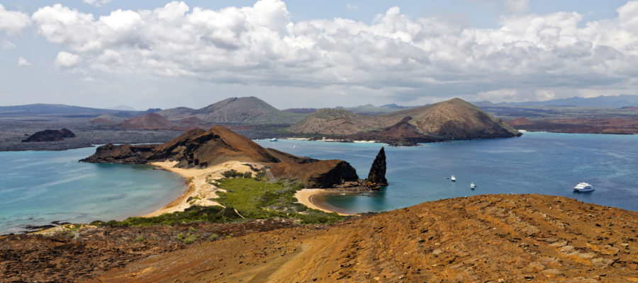

Follow us:

5 of the world's most beautiful islands
Spin the globe, pick a spot and odds are good you'll alight on the color blue: 71% of the Earth's surface is covered with water.
Vast stretches of ocean spread from the edges of the continents, and what lies between the coasts is true wilderness. Far from terrestrial plants and light-filled shallows, the open ocean makes no accommodation for human comfort or survival.
Islands are the exception. These widely scattered landing places offer respite in the form of fresh water, abundant food and the occasional fruity cocktail.
Maybe that's the travel secret behind the evocative power of beautiful islands. Like the rainforest-cloaked island of Kaua'i, some are the summits of drowned volcanoes, smoking and burning above the waterline. Others, such as the Seychelles, are the scattered shards of continents, while atolls are coral crusted over a sinking landmass.
Every single one invites travelers to leave familiar shores behind.
From Norway's Arctic reaches to the sunny reefs of Palawan, these beautiful islands span latitudes, climates and cultures.
Whether you're dreaming of a beachy escape or plotting a course for the edges of the Earth, these are the world's 10 most beautiful islands:
Milos (Greece)
Pale rock meets sapphire water on Milos, a tiny island at the southwestern tip of the Greek Cyclades.
This is where the famed Venus de Milo was discovered in 1820, and the island -- like the statue -- does spectacular justice to the ancient goddess of love.
Whitewashed houses with blue shutters mirror the island's natural color scheme, and the coast has eroded into a wonderland of arches, coves and white-sand beaches that invite discovery. The Kleftiko caves, which you can reach only by water, are amazing.
Go to: Sip chilled ouzo at a beach-side restaurant, and try grilled seafood that's fresh from the Aegean. Milos can be reached by a 40-minute flight or a ferry from Athens (ferries take between three and seven hours).
Bartolomé (Ecuador)
A wilderness preserve that's among the Galápagos' most beautiful islands, Bartolomé is a jewel-toned setting for charismatic penguins, skittering crabs and marine iguanas.
The bald summit of Pinnacle Rock looks out across pale beaches and blue-green water, their colors offset by the coal-black lava flow at Sullivan Bay.
It's not possible to overnight on Bartolomé, which is named for a friend of the naturalist Charles Darwin, but the island is just a day trip away from Santa Cruz, the Galápagos' main base for visitors.
Go to: Don a snorkel and swim with Galápagos penguins, the only penguins to live north of the equator. Spot the native birds as they dart below the surface while looking for food.
St. Lucia (Lesser Antilles)
Bright-painted houses are strewn like confetti across St. Lucia's steeply pitched slopes, which veer from rocky summits to the Caribbean shoreline.
A matched set of volcanic peaks, the Pitons, are the spectacular centerpiece of this beautiful island.
Lush forest at the base of the mountains, which are part of a UNESCO World Heritage Site, give way to miniaturized "elfin woodlands" at higher elevations. Here, look for fairy-sized hummingbirds, delicate ferns and trails shrouded in mist.
Go to: Hike to the summit of Gros Piton, then enjoy post-trail rum drinks at nearby Sugar Beach -- or from a private infinity pool with views of the mountains.]
Komodo Island (Indonesia)
From a lipstick-pink beach to free-roaming lizards, Komodo Island is a topsy-turvy tropical paradise pulled straight from a fever dream.
Here, thorny savanna rolls towards a shoreline lapped by crystalline water, dramatically varied ecosystems that provide shelter for oddball wildlife.
The island's most famous residents are Komodo dragons, slow-moving creatures with sharp teeth and deadly venom. Coral reefs are a spectacular habitat for pygmy seahorses and the surreal-looking blue-ringed octopus, and lucky divers might spot Omura's whales or rare dugongs, marine mammals that spend their days grazing on sea grass.
Go to: Stroll a pink-sand beach at sunset, but go now -- Komodo Island is closing for 2020 to help preserve the Komodo dragon habitat.
Mo'orea (French Polynesia)
A fringing reef wraps the island of Mo'orea in a sheltered embrace, creating a creamy blue lagoon that's a natural playground for swimming and snorkeling.
But it's a dramatic backdrop of jungle mountains that make Mo'orea one of the most beautiful islands on Earth. The summits rise from the forest like jagged stone teeth, a rugged contrast to the paradise scenes at the water's edge.
And while Mo'orea is just a quick ferry trip away from the famously beautiful island of Tahiti, the smaller isle is far less developed. That means fewer crowds to contend with as you roam white-sand beaches, paddle clear bays and swim with humpback whales.
Go to: Sleep in an overwater bungalow with views of the mountains, then sip your morning coffee as tropical fish dart beneath your front porch.